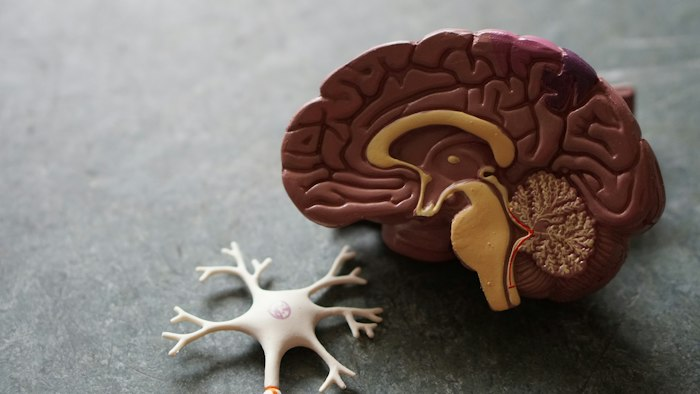
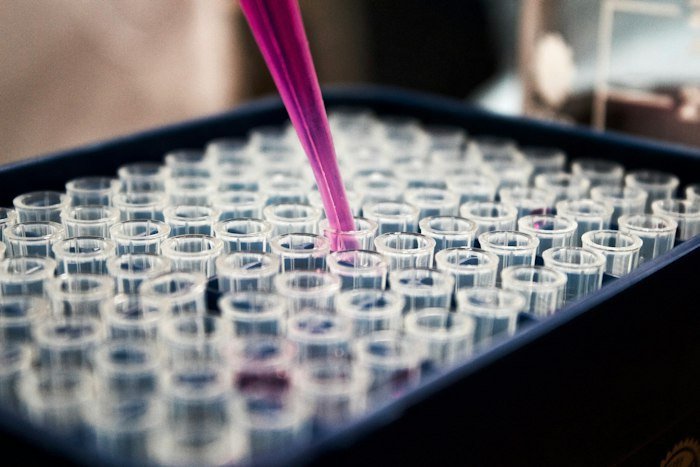
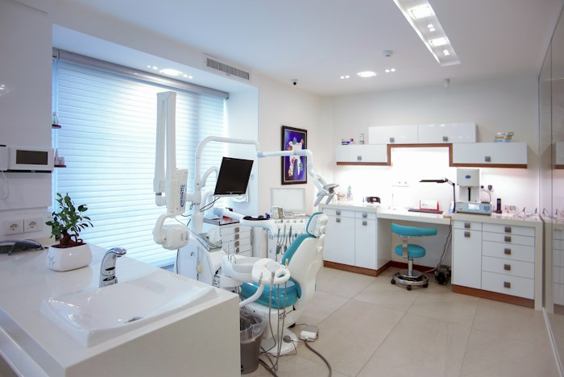
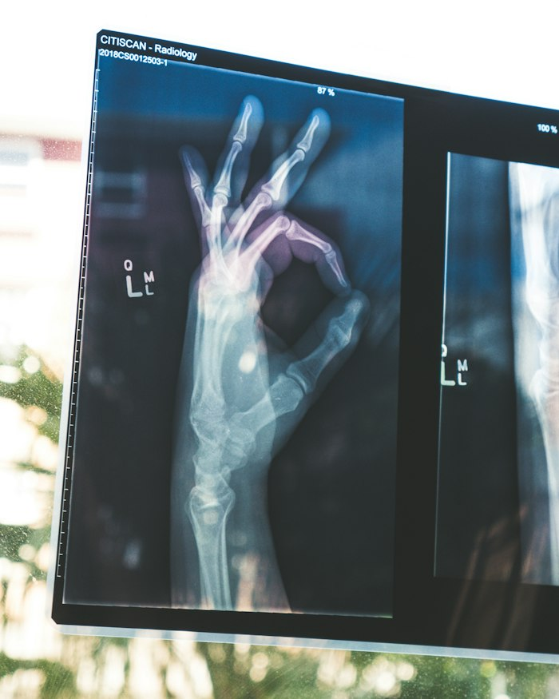
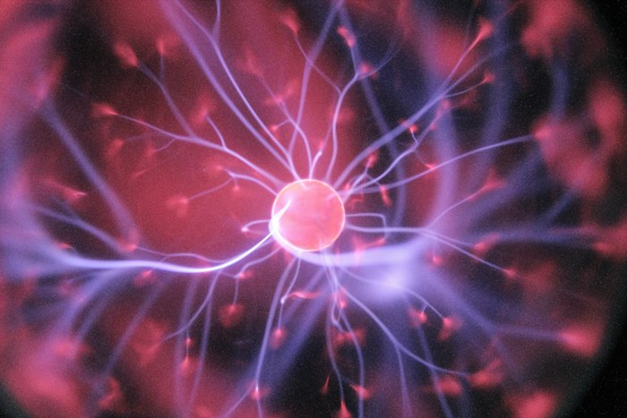

Neural Signal-to-Text Decoding
Transforms interpretable neural patterns into text or communication outputs, with the goal of enabling communication without conventional speech.
Explore DecodingDirect mappings between cortical articulatory intent, responsive neurostimulation, and real-time speech synthesis.

Transforms interpretable neural patterns into text or communication outputs, with the goal of enabling communication without conventional speech.
Explore DecodingAims to combine continuous neural monitoring with responsive stimulation to help detect and intervene in abnormal neural activity.
Explore Neurostimulation
Enables research into neural communication systems for individuals with severe speech impairments.
Explore Speech Prosthesis
Targets adaptable neural interaction across different users and applications without requiring exhaustive per-user retraining.
Explore InterfaceSupports continuous assessment of neural activity and the identification of potentially significant changes over extended recording sessions.
Explore MonitoringProactive detection methodologies, closed-loop bio-feedback systems, and external actuator integration.

Targets early identification of neural patterns associated with impending seizures to enable proactive interventions.
Explore DiagnosticsEnables research into controlling external devices through decoded neural intentions, bypassing impaired neuromuscular junctions.
Explore Assistive ControlConnects neural activity with rehabilitation systems to support movement training, plasticity, and motor recovery.
Explore Rehabilitation
Targets stimulation strategies that respond dynamically to neural activity rather than following static, open-loop stimulation pulses.
Explore Bio-FeedbackSeeks to extract meaningful information from complex neural signals through spatial decomposition and blind-source separation.
Explore Signal ProcessingSystemic brain-state metrics, conscious awareness evaluation, cognitive workload assessment, and unified neural infrastructure.

Supports investigation of neural patterns associated with neurological conditions for exploratory characterization.
Explore Biomarkers
Targets assessment of selected indicators associated with consciousness, vigilance, and neurological function.
Explore Brain StatesAims to improve the speed, accuracy, and naturalness of neural communication using tokenized language models.
Explore High BandwidthTargets the estimation of attention, cognitive workload, and fatigue from non-invasive physiological signals.
Explore AssessmentProvides a broader technological direction for integrating neural communication, monitoring, assistive control, and rehabilitation.
Explore PlatformExplores event-driven, low-power neuromorphic computing modules capable of processing spiking biosignal primitives directly on-edge.
Explore Edge Architecture